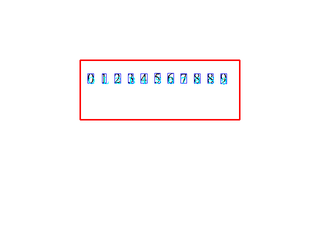
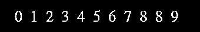
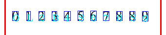

Point the camera at text inside the red box and press c. The frame freezes and every character-sized blob gets a letter.
textDetection().clearDots() drops white pixels that have fewer than 4 white pixels in the 6 × 6 square around them.loadOCRHMMClassifierCNN) picks one of 62 classes, a–z, A–Z and 0–9, and the letter is drawn under the box.
TEST.jpg, scaled down, in a blank frame, through the same function.
clear: after the threshold and clearDots()
rect: 11 blobs kept, a letter under each